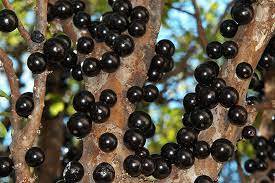
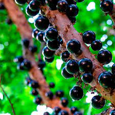
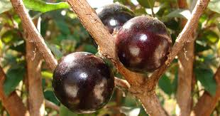

Objetivos
.
Nesse site você encontrará diversas informações sobre a jabuticabeira, uma planta de médio porte nativa da Mata Atlântica, tendo como nome originário ïapotï’kaba que significa "frutas em botão". Eu selecionei tal planta pois quando eu era pequeno gostava de catar as jabuticabas numa bacia para lavá-las e comê-las.
Podendo chegar até 9 metros de altura, a jabuticabeira pode levar entre 10 e 15 anos para frutificar, além de poder ser cultivada em pomares, quintais, e até mesmo em vasos, como planta ornamental.
- 
- 
- 
A jabuticabeira, proveniente da Mata Atlântica, dá a jabuticaba, seu fruto silvestre, esférico e roxo-escuro. O mesmo é muito utilizado, tanto na gastronomia (presente em geleias, licores e vinagres) quanto em produtos estéticos (como sabão, esfoliantes, perfumes, óleos de colônia). Além disso, o fruto também possui utilidades medicinais, em que a função antioxidante presente na fruta neutraliza o má desempenho das células e auxilia o regulamento da pressão arterial, além de um composto presente na casca que protege as estruturas do cérebro ligada ao armazenamento da memória e prevenção do Alzheimer.